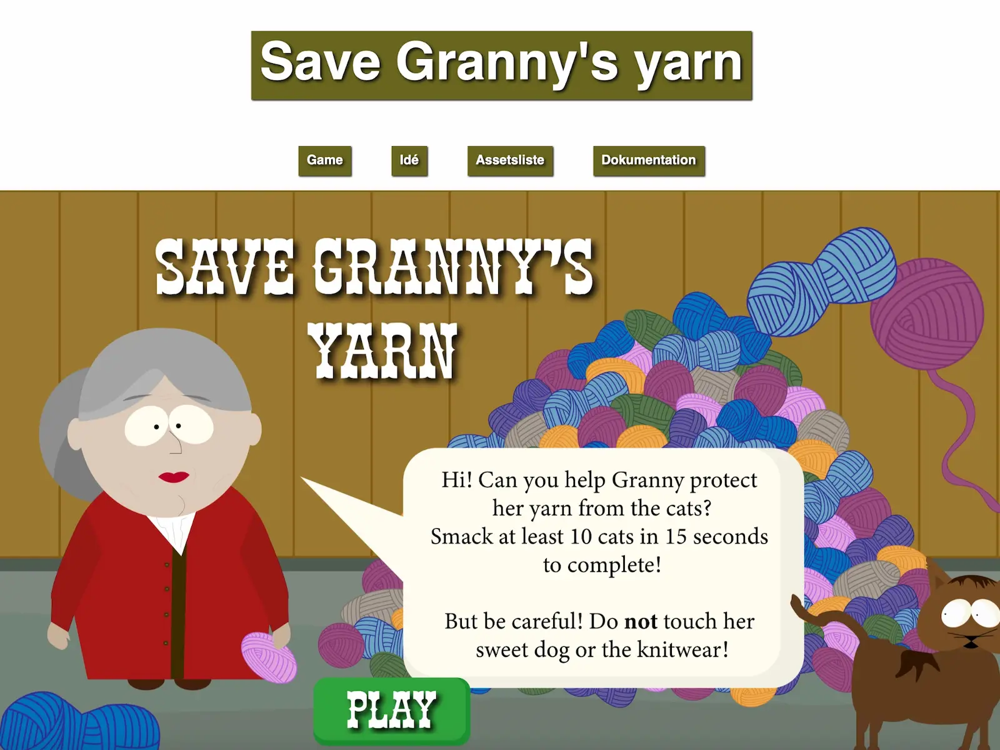

TEMA 4 - GRUNDLÆGGENDE ANIMATION
SAVE GRANNY'S YARN
I dette tema er jeg blevet introduceret til programmeringssproget javascript, som er en uundværlig del af det
moderne internet og bruges til at kode avancerede og
dynamiske websites samt skabe interaktive elementer, som burgermenuer, slideshows, snap scrolls etc.
Jeg skulle i dette tema bruge javascript sammen med css animationer, til at skabe en spil. Jeg har udviklet et koncept og en idé.
Jeg har selv designet alle elementer i spillet, og kodet det fra bunden.
IDÉGENERERING
KRYDSMETODEN
Første del af processen var at finde på en ide og et koncept, så her blev jeg præsenteret for idégenererings metoder. Her valgte jeg at gøre brug af krydsmetoden, som gik ud på at opsætte en masse forskellige ord inden for 3 kategorier, og føre dem sammen ved hjælp af en streg. Resultaterne fra denne metode valgte jeg ikke at gå videre med, men jeg tog noget inspiration derfra og endte ud med at det skulle handle om en mormor, noget garn og katte.
UDVIKLING AF DET VISUELLE KONCEPT
Så var det tid til udvikle på det visuelle koncept. For at gøre dette skulle der sættes fokus på formgivning af grafiske elementer. Her forsøgte jeg at udarbejde hvilke personer/figurer jeg gerne ville have med i mit spil. Derfor brugte jeg skitseringsteknikker, og fik netop skitseret nogen figurer ned, samt blev klar over hvordan jeg gerne ville have dem til at se ud.
UI-elementer
Efter dette startede designfasen ift. at designe alle figur-elementer, spil-elementer, baggrundsdesign, UI-elementer, typografi, farver og komposition. For at udføre dette gjorde jeg brug af programmet Adobe Illustrator.
MOODBOARD & STYLETILE
For at komme endnu nærmere noget dokumentation og udvikling af det visuelle koncept, udarbejdede jeg et moodboard for at specificere layout og udtryk. Jeg valgte south park som min inspiration til mit spil. Mit moodboard er derfor meget inspireret af south park. Dertil blev der også udviklet et styletile, for at præcisere farverne m.m på mit site og i mit spil.
AKTIVITETSDIAGRAM & STATE MACHINE

For at blive klogere på hvordan mit spil skulle forløbe, udarbejdede jeg et aktivitetsdiagram.
Et aktivitetsdiagram beskriver en aktivitet som består af detaljerede handlinger og beslutninger,
altså actions og decisions. Altså beskriver det hvordan ting sker i en bestemt rækkefølge, men hvor
det ikke altid er det samme som sker hver gang aktiviteten udføres.
Senere i processen udviklede jeg et statemachine diagram. Denne metode er en meget mere udspecificeret
diagram over hvordan spillet foregår, og hvad der helt præcist sker når man trykker på bestemte ting, og
hvordan ens javascript kommer ind over.
FÆRDIGE SPIL - SAVE GRANNY'S YARN
Undervejs i spillet fik man feedback af sine medstuderende. Dette gav mig anledning til at rette op på mine lydeffekter, da de ikke var helt i top ift. spillet.
Mit spil handler altså om en mormor som har en masse garn og en masse katte. Kattene er vilde med hendes garn og derfor skal man slå kattene væk. Hvis man rammer kattene får man plus point, hvis man rammer hunden får man minus point.
LINK TIL RESULTAT
ANIMATIONSSPILLET - SAVE GRANNY'S YARN
file:///Users/rebeccahildebrandt/Desktop/kea/04_animation/spil_6/game.html